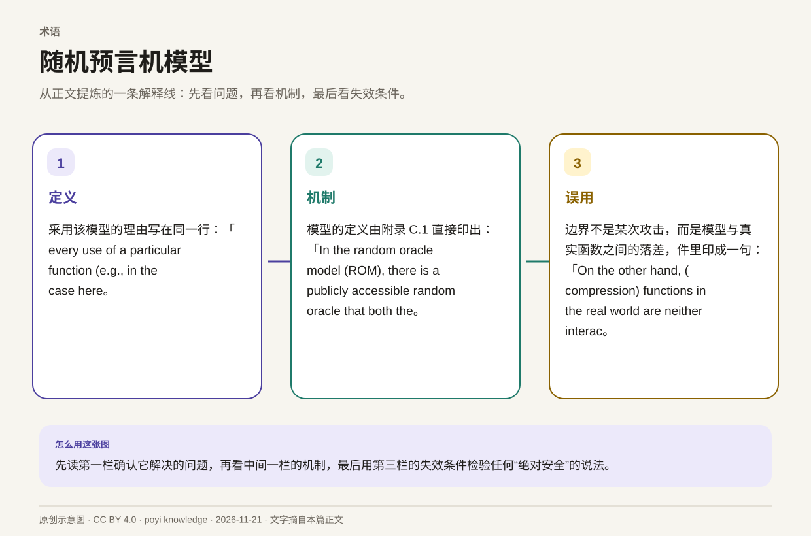

原理与机制
术语：随机预言机模型（Random Oracle Model）。模型的定义由附录 C.1 直接印出：「In the random oracle model (ROM), there is a publicly accessible random oracle that both the user and the adversary can send queries to and receive responses from at any time.」（在随机预言机模型中，存在一个公开可访问的随机预言机，用户与敌手都可随时向其发送查询并接收响应。）同一节给出等价的非交互描述：「a non-interactive but exponentially large look-up table initialized with truly random outputs t for each possible input string s」（一张非交互但指数级大的查找表，为每个可能的输入串 s 预先以真随机输出 t 初始化）。两种描述指同一对象，件里用 H 记该预言机。

为什么重要
采用该模型的理由写在同一行：「every use of a particular function (e.g., in the case here, the compression function that is used to perform hashes) is replaced by a query to the random oracle H」（对某个特定函数的每一次使用——此处即用于执行散列的压缩函数——都被替换为对随机预言机 H 的一次查询）。紧接着给出它带来的便利：「This simplifies security claims because, for example, it becomes easy to prove upper bounds on the likelihood of producing a second preimage within a fixed number of queries to H.」（这简化了安全性断言，例如容易证明在对 H 的固定查询次数内产生第二原像的可能性的上界。）便利来自替换本身，而不是来自对真实函数的性质证明。
应用与实例
使用现状由件本身下判断：「So, as a matter of real-world pragmatism, the ROM is commonly used.」（因此出于现实世界的务实考虑，ROM 被普遍使用。）它在本件中的具体落点是散列：第 1979 行把被替换的函数举例为「the compression function that is used to perform hashes」（用于执行散列的压缩函数）。同一附录还给出量子变体：「The quantum random oracle model (QROM) is similar to the ROM, except that it is additionally assumed that all parties (in particular, the adversary) have quantum computers and can query the random oracle H in superposition.」（量子随机预言机模型与 ROM 相似，只是额外假设各方——特别是敌手——拥有量子计算机并能以叠加态查询随机预言机 H。）
边界与攻击面
边界不是某次攻击，而是模型与真实函数之间的落差，件里印成一句：「On the other hand, (compression) functions in the real world are neither interactive nor have exponentially large descriptions, so they cannot truly behave like a random oracle.」（另一方面，现实世界中的（压缩）函数既非交互式，也不具有指数级大的描述，因此它们不可能真正表现得像一个随机预言机。）由此引出取舍：「It is therefore desirable to have a cryptographic security proof that avoids using the random oracle model.However, this often leads to less efficient cryptographic systems, or it is not yet known how to perform a proof without appealing to the random oracle model, or both.」（因此拥有一个避开随机预言机模型的安全性证明是可取的；但这常导致效率更低的密码系统，或尚不知道如何不借助该模型完成证明，或两者兼有。）该条目据此只声明这是理想化假设的局限，不声明任何具体方案已被攻破。
历史与背景
可断代的只有留存件自身：第 20 行印「Natl.Inst.Stand.Technol.Spec.Publ.800-208, 59 pages (October 2020)」（美国国家标准与技术研究院特殊出版物 800-208，59 页，2020 年 10 月）。该模型在本件中的位置是附录：第 1971 行印「C.1 The Random Oracle Model」，第 1982 行印「C.2 The Quantum Random Oracle Model」。实测在附录区域检索 Bellare、Rogaway、1993 与 heuristic 均无命中，因此该条目不主张该模型由谁在何时提出——常见的 1993 年归名不由这份留存件印出，按证据规则不写入。
逐步示例与核验
定义检查模型
上位概念 → 区别特征 → 正例 → 反例 → 易混边界。正例必须落在外延内；反例必须刚好跨过边界；同义词不能代替定义。
参考出处
- Wikipedia search entry for 随机预言机模型. https://zh.wikipedia.org/w/index.php?search=%E9%9A%8F%E6%9C%BA%E9%A2%84%E8%A8%80%E6%9C%BA%E6%A8%A1%E5%9E%8B
- RFC 4949: Internet Security Glossary, Version 2. https://www.rfc-editor.org/rfc/rfc4949